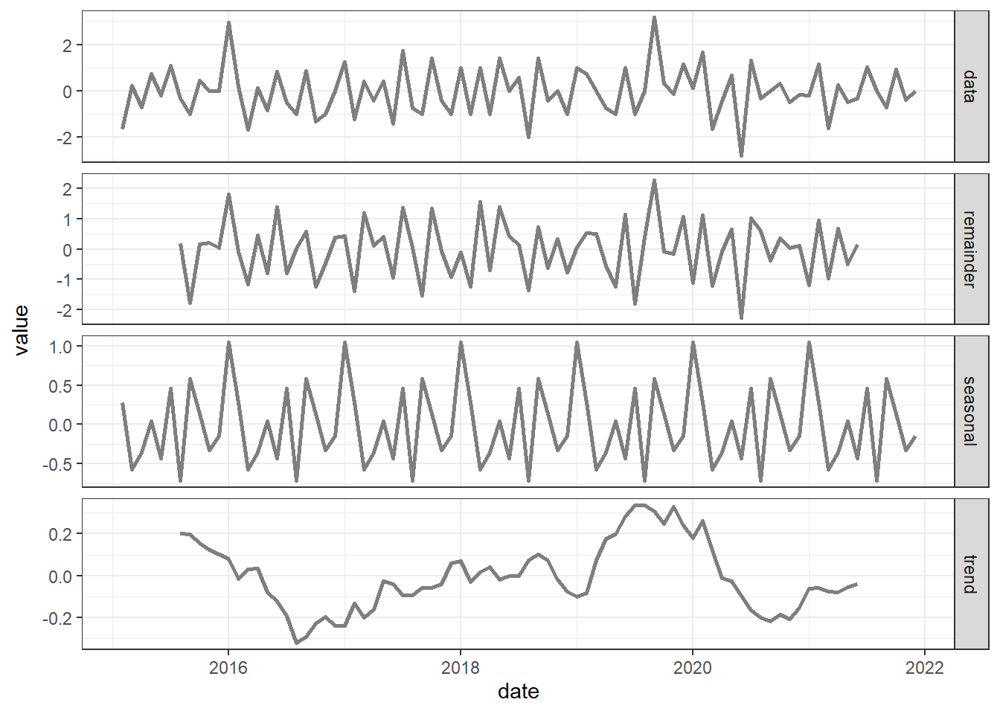

Capítulo 3 Evaluación de Estacionalidad
3.1 ADF test
Se utiliza la prueba de Dickey-Fuller Aumentado (ADF) para obtener una estadística que permita confirmar o descartar la estacionalidad de la serie Casos de Dengue Grave en Cali.
3.1.1 Evaluación inicial
Augmented Dickey-Fuller Test
data: c220.ts
Dickey-Fuller = -2.2133, Lag order = 4, p-value = 0.4884
alternative hypothesis: stationaryDado que el valor de probabilidad obtenido es mayor que el nivel de significancia elegido, que en este caso es 0.05, entonces no se puede rechazar la hipótesis nula de la prueba, y se concluye que no hay evidencia suficiente para afirmar que la serie de tiempo es estacionaria.
3.1.2 Evaluación después de transformar la TS
En la búsqueda de opciones de representación se había empleado el Operador Diferencia, y dado que pareciera tener algún potencial para configurar una dinámica que visibilice ciclos periódicos, se realizó un proceso itetarivo que condujo a identificar que si se utiliza un rezago de 1 periodo, entonces, la prueba ADF generaría un resultado distinto al obtenido en la sección anterior.
Augmented Dickey-Fuller Test
data: c220i.ts
Dickey-Fuller = -4.5358, Lag order = 4, p-value = 0.01
alternative hypothesis: stationaryEn este caso el valor de probabilidad obtenido es menor que el nivel de significancia, entonces se rechaza la hipótesis nula y se concluye que la serie de tiempo transformada con el operador diferencia es estacionaria, porque su media y variana son constantes a lo largo del tiempo.
3.2 Funciones ACF y PACF
3.2.2 PACF
Don't know how to automatically pick scale
for object of type <ts>. Defaulting to
continuous.Warning: Removed 24 rows containing missing values
(`geom_line()`).Don't know how to automatically pick scale
for object of type <ts>. Defaulting to
continuous.Warning: Removed 24 rows containing missing values
(`geom_line()`).
3.3 Modelo ARIMA
A continuación se aplica la función auto.arima para encontrar un modelo de ajuste eficiente.
Attaching package: 'forecast'The following object is masked from 'package:ggpubr':
gghistogramSeries: c220i.ts
ARIMA(0,0,1) with zero mean
Coefficients:
ma1
-0.4124
s.e. 0.0993
sigma^2 = 0.9335: log likelihood = -114.51
AIC=233.02 AICc=233.17 BIC=237.85
Training set error measures:
ME RMSE MAE MPE MAPE MASE ACF1
Training set -0.02942845 0.96036 0.74593 NaN Inf 0.6448007 -0.0093427253.4 Puntos de cambio
Successfully loaded changepoint package version 2.2.4
See NEWS for details of changes.Created Using changepoint version 2.2.4
Changepoint type : Change in mean
Method of analysis : AMOC
Test Statistic : Normal
Type of penalty : MBIC with value, 13.25652
Minimum Segment Length : 1
Maximum no. of cpts : 1
Changepoint Locations : 3.7 Supuestos de una ARIMA
3.7.1 Media cero de los residuos
One Sample t-test
data: mr
t = -0.27762, df = 82, p-value = 0.782
alternative hypothesis: true mean is not equal to 0
95 percent confidence interval:
-0.2403046 0.1814477
sample estimates:
mean of x
-0.02942845 3.7.3 Distribución
Shapiro-Wilk normality test
data: mr
W = 0.97452, p-value = 0.09793Loading required package: carData
Attaching package: 'car'The following object is masked from 'package:purrr':
someThe following object is masked from 'package:dplyr':
recode[1] 56 12Loading required package: MASS
Attaching package: 'MASS'The following object is masked from 'package:dplyr':
selectLoading required package: survivalNOTE: Packages 'fBasics', 'timeDate', and 'timeSeries' are no longer
attached to the search() path when 'fGarch' is attached.
If needed attach them yourself in your R script by e.g.,
require("timeSeries")Loading required package: timeSeriesLoading required package: timeDate
Attaching package: 'timeDate'The following objects are masked from 'package:moments':
kurtosis, skewness
Attaching package: 'timeSeries'The following object is masked from 'package:zoo':
time<- Min. 1st Qu. Median Mean 3rd Qu. Max.
-2.65706 -0.73780 -0.06395 -0.02943 0.53559 3.02664 [1] 0.4920221
attr(,"method")
[1] "moment"[1] 1.012301
attr(,"method")
[1] "excess"$par
mean sd nu
-0.06375018 0.96022002 7.97369416
$objective
[1] 113.1248
$convergence
[1] 0
$iterations
[1] 45
$evaluations
function gradient
51 149
$message
[1] "relative convergence (4)"[1] 83